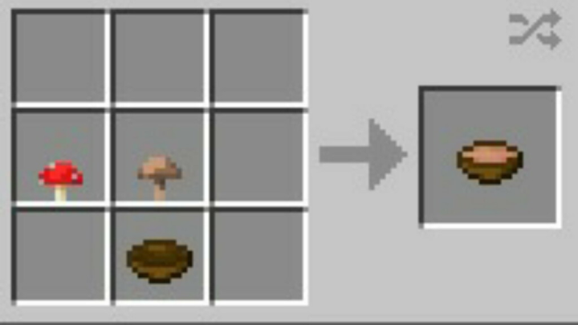

🍚 Mushroom Stew
First Published: 2024-04-25

- Prep time: 10 min
- Cooking time: 15 min
Ingredients
- 250g champignon
- 50-100g other mushrooms (opt)
- 30g dried porcini (sub: other expensive mushrooms)
- 50g butter
- 2 small onions / 1 large onion
- 200g cream
- 500ml water
- 3 tsp broth powder
- 1 tsp curry powder
- 2 tsp white pepper (opt)
- some parsley (opt)
- black pepper (opt)
- 1 baguette (opt)
- cutting board
- cutting knife
- small pot
- cooking spoon
Directions
- Optionally, clean the mushrooms
(with a kitchen cloth/paper towel, no water)
- Cut half the mushrooms
- Put the butter in the pot on high heat
- Cut the other half of the mushrooms
- Once the butter has melted, add the mushrooms
- Roast for 3 minutes
- Meanwhile cut the onions
- Add onions and curry powder
- Mix
- Roast for another 3 minutes
- Add borth powder, water and white pepper
- Bring to a boil
- Stir occasionally
- Turn heat to low and add the cream
- Simmer for another 3 minutes
- Optionally garnish with parsley
- Works well with baguette as a side
- Done. Serves 2 (add black pepper when serving)